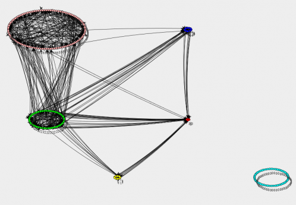

Gabriel Calegari is a Master's student in Computer Science at UFMG.
He earned his B.Sc degree in Computer Engineering from CEFET-MG in 2015. Currently, besides his research, he works as a Software Engineer at SYDLE in Belo Horizonte.
He has experience as an academic tutor in Object-Oriented Programming and as a researcher about Object-Oriented Software
Quality and Complex Networks. He was a visiting student at Pompeu Fabra University (Barcelona, Spain)
in 2013/2014.
This project aimed to contribute in the area of software visualization, developing a tool that
allows to explore visually in detail the structures of object-oriented softwares. The tool,
called VISOFT, aims to provide graphical visualization of the relationship of dependency
between the modules of a software.
FAPEMIG - CEFET-MG
Date:
March 2013 - March 2014
Science without Borders - Spain
The brazilian program Science without Borders awards scholarships in more than twenty countries.
My experience was in the Pompeu Fabra University, Barcelona, Spain. In that opportunity I
did 12 courses in the following areas: Intelligent Systems, Software Engineering and Mobile
Communications. A presentation about that experience (academic and personal) can be seen
here.
Using network metrics to evaluate the quality of the object-oriented software
This project aims to check the correlation between the number of bugs that a object-oriented
software contains and its network structure based on the Little House topology of software
systems.
CEFET-MG
Date:
2014 - 2015
Visualização de Software baseada no modelo Little House
Authors: Gabriel Lage Calegari; Kecia Aline Marques Ferreira

Developing and keeping the software systems with high quality are difficult tasks. The low understanding
of the software structures and the complexity of analysing the impacts of changes in a software
system are important impediments to a software evolve without substantial deteriorations.
The graphical visualization of the system and its properties – modules, relationship between
modules, metrics of modules, metrics of relationships between modules – may allow to better
identify possible needs for refactoring, therefore, attenuate the process of deterioration.
Aiming to contribute to overcome this issue, a previous work of one of the authors of this
paper has defined a model, called Little House, which consists of a macroscopic picture of
the object-oriented software structures, based on the bow-tie model that describes the Web.
Little House represents a software system as a network which can be partitioned in 6 components.
The goal of this work is to develop algorithms to this model and create a software visualization
tool that shows the software networks based in Little House.